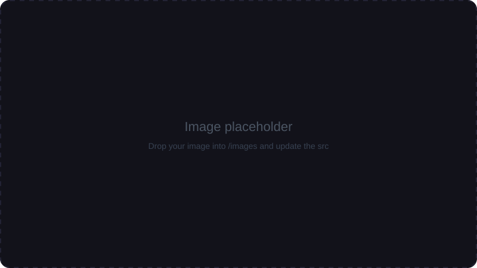

Projects
Things I've built
Two products, built end to end — both moving real money for real users.
DirectPay Payment Gateway
Oct 2023 – Sep 2024 · directpay.my
Overview
A 0-to-1 payment middleware platform integrated with FPX (Malaysia's online banking payment network) for secure, seamless online payment processing. Built from nothing to a live product processing real transactions.
My Responsibilities
Designed scalable backend workflows for payment processing and settlement reconciliation; implemented automated transaction-inquiry CRON jobs; built pending-transaction handling to keep payment states accurate even when bank responses are delayed.
Architecture
Payment requests flow through the middleware to FPX; scheduled inquiry jobs reconcile any transaction whose final state wasn't confirmed in real time.

Screenshots
Technologies
LaravelMySQLFPX Integration
CRON JobsPayment APIs
(draft — verify/edit the exact stack)
Challenges
Payments can fail in ambiguous ways — a bank timeout doesn't mean the payment failed. Designing the pending-transaction flow so no payment is ever lost or double-counted was the hardest and most important part.
Lessons Learned
Reconciliation isn't an afterthought — it IS the payment system. Idempotency and state machines beat optimistic assumptions every time.
PRiM — People Relationship Information Management
Aug 2021 – Apr 2023 · prim.my
Overview
A donation and organization management platform serving 200+ Malaysian organizations — schools, NGOs, and religious institutions — handling donations, school fee payments, and administrative workflows.
My Responsibilities
Developed donation management services; built school-fee payment systems for primary and secondary schools with integrated payment workflows; developed administrative modules for organization management.
Architecture
A multi-organization platform where each institution manages its own donations, fees, and members on shared infrastructure.
Screenshots
Technologies
LaravelMySQLPayment Workflows
(draft — verify/edit the exact stack)
Challenges
200+ organizations means 200+ ways to configure fees, donation categories, and receipts. Designing flexible-but-safe payment workflows that non-technical administrators could operate was a constant balancing act.
Lessons Learned
This project taught me that software serving real communities has to be boring and dependable. It's also where I fell in love with payment systems — a passion that shaped everything after.